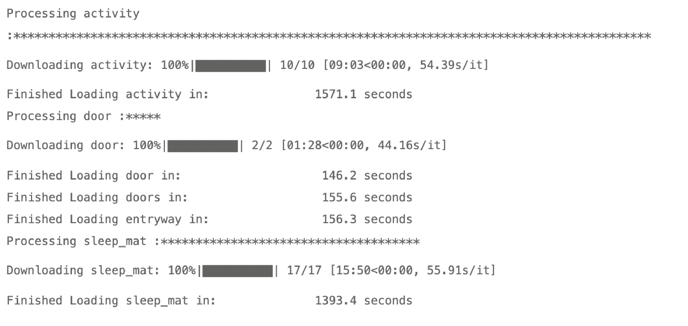

Developing a recipe of your own
Developing a recipe of your own¶
Until now, we covered how to configure and use dcarte to download the raw datasets collected by the ukdri. We’ve also learned that dcarte has three derived domains to extend its capabilities by adding some cleaning logic over the raw data.
In the last tutorial, we will create a new domain and one new derived dataset.
We start like always by loading some key libraries.
import dcarte
import pandas as pd
import seaborn as sns
import matplotlib.pyplot as plt
import numpy as np
---------------------------------------------------------------------------
ModuleNotFoundError Traceback (most recent call last)
Input In [1], in <cell line: 1>()
----> 1 import dcarte
2 import pandas as pd
3 import seaborn as sns
ModuleNotFoundError: No module named 'dcarte'
This notebook deconstructs the motion dataset in the base domain. We will go over the different steps taken to create this dataset as an example that I hope you can take further in your research.
dcarte.__version__
'0.3.33'
Here is a print screen of the output of reloading the entire motion dataset to review the different parts that create this simple building block dataset.
please don’t run this during the tutorial as it will take around 60 min to reconstruct this dataset completely

After the initial download, we have an updated version of the different parent datasets needed to reconstruct the motion dataset.
And as a result, dcarte will load the dataset from the local store, which is very fast.
motion = dcarte.load('motion', 'base')
Finished Loading motion in: 2.2 seconds
As you can see, the motion dataset uses various datasets, all updated to a recent version since we just reloaded them.
let’s load the different elements using dcarte.
activity = dcarte.load('activity', 'raw')
entryway = dcarte.load('entryway', 'base')
bed_occupancy = dcarte.load('bed_occupancy', 'base')
Finished Loading activity in: 2.6 seconds
Finished Loading entryway in: 0.1 seconds
Finished Loading bed_occupancy in: 0.1 seconds
bed_occupancy.head(10)
| patient_id | start_date | location_name | |
|---|---|---|---|
| 0 | 2GN1PHeHwRzNYQ7q4Nvg7g | 2021-05-29 04:20:00 | Bed_out |
| 1 | 2GN1PHeHwRzNYQ7q4Nvg7g | 2021-05-29 04:56:00 | Bed_in |
| 2 | 2GN1PHeHwRzNYQ7q4Nvg7g | 2021-05-29 04:58:00 | Bed_out |
| 3 | 2GN1PHeHwRzNYQ7q4Nvg7g | 2021-05-29 05:00:00 | Bed_in |
| 4 | 2GN1PHeHwRzNYQ7q4Nvg7g | 2021-05-29 07:10:00 | Bed_out |
| 5 | 2GN1PHeHwRzNYQ7q4Nvg7g | 2021-05-29 07:20:00 | Bed_in |
| 6 | 2GN1PHeHwRzNYQ7q4Nvg7g | 2021-05-29 07:48:00 | Bed_out |
| 7 | 2GN1PHeHwRzNYQ7q4Nvg7g | 2021-05-29 14:36:00 | Bed_in |
| 8 | 2GN1PHeHwRzNYQ7q4Nvg7g | 2021-05-29 16:47:00 | Bed_out |
| 9 | 2GN1PHeHwRzNYQ7q4Nvg7g | 2021-05-29 16:57:00 | Bed_in |
entryway.head(10)
| patient_id | location_name | start_date | end_date | source | sink | transition | dur | |
|---|---|---|---|---|---|---|---|---|
| 0 | 2GN1PHeHwRzNYQ7q4Nvg7g | front door | 2021-05-14 13:33:44 | 2021-05-14 13:34:56 | opened | closed | opened>closed | 72.0 |
| 1 | 2GN1PHeHwRzNYQ7q4Nvg7g | front door | 2021-05-14 13:34:56 | 2021-05-14 13:50:30 | opened | closed | opened>closed | 934.0 |
| 2 | 2GN1PHeHwRzNYQ7q4Nvg7g | front door | 2021-05-14 13:50:30 | 2021-05-14 13:50:32 | opened | closed | opened>closed | 2.0 |
| 3 | 2GN1PHeHwRzNYQ7q4Nvg7g | front door | 2021-05-14 13:50:32 | 2021-05-14 14:39:52 | opened | closed | opened>closed | 2960.0 |
| 4 | 2GN1PHeHwRzNYQ7q4Nvg7g | front door | 2021-05-14 14:41:35 | 2021-05-14 14:41:39 | opened | closed | opened>closed | 4.0 |
| 5 | 2GN1PHeHwRzNYQ7q4Nvg7g | front door | 2021-05-14 15:17:30 | 2021-05-14 15:17:38 | opened | closed | opened>closed | 8.0 |
| 6 | 2GN1PHeHwRzNYQ7q4Nvg7g | front door | 2021-05-14 15:18:52 | 2021-05-14 15:19:02 | opened | closed | opened>closed | 10.0 |
| 7 | 2GN1PHeHwRzNYQ7q4Nvg7g | front door | 2021-05-14 15:24:54 | 2021-05-14 15:24:59 | opened | closed | opened>closed | 5.0 |
| 8 | 2GN1PHeHwRzNYQ7q4Nvg7g | front door | 2021-05-14 15:39:56 | 2021-05-14 15:40:03 | opened | closed | opened>closed | 7.0 |
| 9 | 2GN1PHeHwRzNYQ7q4Nvg7g | front door | 2021-05-14 16:08:34 | 2021-05-14 16:08:50 | opened | closed | opened>closed | 16.0 |
activity.head(10)
| start_date | patient_id | home_id | location_id | location_name | source | |
|---|---|---|---|---|---|---|
| 0 | 2020-12-09 14:53:17 | Dr1tnvKDk2bHG8YS21nwiR | 8dmPt4UuEdAC7p9XpWpMXQ | PNPiyDzPr9baA5KeXBso6p | bedroom1 | raw_activity_pir |
| 1 | 2020-12-09 14:53:18 | Dr1tnvKDk2bHG8YS21nwiR | 8dmPt4UuEdAC7p9XpWpMXQ | 2gdBq1z4fMLeNrc9C9JQXJ | kitchen | raw_activity_pir |
| 2 | 2020-12-09 14:53:18 | Dr1tnvKDk2bHG8YS21nwiR | 8dmPt4UuEdAC7p9XpWpMXQ | TwGbQd3ozRP3DhtjUKzwSZ | bathroom1 | raw_activity_pir |
| 3 | 2020-12-09 14:53:19 | Dr1tnvKDk2bHG8YS21nwiR | 8dmPt4UuEdAC7p9XpWpMXQ | PoSbtob4YKWLw2bwk1mEGy | lounge | raw_activity_pir |
| 4 | 2020-12-09 14:53:36 | Dr1tnvKDk2bHG8YS21nwiR | 8dmPt4UuEdAC7p9XpWpMXQ | J4kNh4xK52vf6NhXA5Lvhi | hallway | raw_activity_pir |
| 5 | 2020-12-09 14:54:11 | Dr1tnvKDk2bHG8YS21nwiR | 8dmPt4UuEdAC7p9XpWpMXQ | TwGbQd3ozRP3DhtjUKzwSZ | bathroom1 | raw_activity_pir |
| 6 | 2020-12-09 14:54:12 | Dr1tnvKDk2bHG8YS21nwiR | 8dmPt4UuEdAC7p9XpWpMXQ | 2gdBq1z4fMLeNrc9C9JQXJ | kitchen | raw_activity_pir |
| 7 | 2020-12-09 14:54:13 | Dr1tnvKDk2bHG8YS21nwiR | 8dmPt4UuEdAC7p9XpWpMXQ | PNPiyDzPr9baA5KeXBso6p | bedroom1 | raw_activity_pir |
| 8 | 2020-12-09 14:55:18 | Dr1tnvKDk2bHG8YS21nwiR | 8dmPt4UuEdAC7p9XpWpMXQ | PNPiyDzPr9baA5KeXBso6p | bedroom1 | raw_activity_pir |
| 9 | 2020-12-09 14:59:53 | Dr1tnvKDk2bHG8YS21nwiR | 8dmPt4UuEdAC7p9XpWpMXQ | PNPiyDzPr9baA5KeXBso6p | bedroom1 | raw_activity_pir |
from dcarte.utils import localize_time
activity = localize_time(activity,['start_date'])
activity.head(10)
Europe/London
---------------------------------------------------------------------------
ValueError Traceback (most recent call last)
/Users/eyalsoreq/github/dcarte_tutorials/tutorials/session_02/recipes.ipynb Cell 14' in <module>
<a href='vscode-notebook-cell:/Users/eyalsoreq/github/dcarte_tutorials/tutorials/session_02/recipes.ipynb#ch0000013?line=0'>1</a> from dcarte.utils import localize_time
----> <a href='vscode-notebook-cell:/Users/eyalsoreq/github/dcarte_tutorials/tutorials/session_02/recipes.ipynb#ch0000013?line=1'>2</a> activity = localize_time(activity,['start_date'])
<a href='vscode-notebook-cell:/Users/eyalsoreq/github/dcarte_tutorials/tutorials/session_02/recipes.ipynb#ch0000013?line=2'>3</a> activity.head(10)
File /opt/anaconda3/envs/sandbox/lib/python3.8/site-packages/dcarte/utils.py:470, in localize_time(df, factors, timezones)
<a href='file:///opt/anaconda3/envs/sandbox/lib/python3.8/site-packages/dcarte/utils.py?line=467'>468</a> except:
<a href='file:///opt/anaconda3/envs/sandbox/lib/python3.8/site-packages/dcarte/utils.py?line=468'>469</a> print(tz)
--> <a href='file:///opt/anaconda3/envs/sandbox/lib/python3.8/site-packages/dcarte/utils.py?line=469'>470</a> data = pd.concat(data)
<a href='file:///opt/anaconda3/envs/sandbox/lib/python3.8/site-packages/dcarte/utils.py?line=470'>471</a> return data
File /opt/anaconda3/envs/sandbox/lib/python3.8/site-packages/pandas/util/_decorators.py:311, in deprecate_nonkeyword_arguments.<locals>.decorate.<locals>.wrapper(*args, **kwargs)
<a href='file:///opt/anaconda3/envs/sandbox/lib/python3.8/site-packages/pandas/util/_decorators.py?line=304'>305</a> if len(args) > num_allow_args:
<a href='file:///opt/anaconda3/envs/sandbox/lib/python3.8/site-packages/pandas/util/_decorators.py?line=305'>306</a> warnings.warn(
<a href='file:///opt/anaconda3/envs/sandbox/lib/python3.8/site-packages/pandas/util/_decorators.py?line=306'>307</a> msg.format(arguments=arguments),
<a href='file:///opt/anaconda3/envs/sandbox/lib/python3.8/site-packages/pandas/util/_decorators.py?line=307'>308</a> FutureWarning,
<a href='file:///opt/anaconda3/envs/sandbox/lib/python3.8/site-packages/pandas/util/_decorators.py?line=308'>309</a> stacklevel=stacklevel,
<a href='file:///opt/anaconda3/envs/sandbox/lib/python3.8/site-packages/pandas/util/_decorators.py?line=309'>310</a> )
--> <a href='file:///opt/anaconda3/envs/sandbox/lib/python3.8/site-packages/pandas/util/_decorators.py?line=310'>311</a> return func(*args, **kwargs)
File /opt/anaconda3/envs/sandbox/lib/python3.8/site-packages/pandas/core/reshape/concat.py:346, in concat(objs, axis, join, ignore_index, keys, levels, names, verify_integrity, sort, copy)
<a href='file:///opt/anaconda3/envs/sandbox/lib/python3.8/site-packages/pandas/core/reshape/concat.py?line=141'>142</a> @deprecate_nonkeyword_arguments(version=None, allowed_args=["objs"])
<a href='file:///opt/anaconda3/envs/sandbox/lib/python3.8/site-packages/pandas/core/reshape/concat.py?line=142'>143</a> def concat(
<a href='file:///opt/anaconda3/envs/sandbox/lib/python3.8/site-packages/pandas/core/reshape/concat.py?line=143'>144</a> objs: Iterable[NDFrame] | Mapping[Hashable, NDFrame],
(...)
<a href='file:///opt/anaconda3/envs/sandbox/lib/python3.8/site-packages/pandas/core/reshape/concat.py?line=152'>153</a> copy: bool = True,
<a href='file:///opt/anaconda3/envs/sandbox/lib/python3.8/site-packages/pandas/core/reshape/concat.py?line=153'>154</a> ) -> DataFrame | Series:
<a href='file:///opt/anaconda3/envs/sandbox/lib/python3.8/site-packages/pandas/core/reshape/concat.py?line=154'>155</a> """
<a href='file:///opt/anaconda3/envs/sandbox/lib/python3.8/site-packages/pandas/core/reshape/concat.py?line=155'>156</a> Concatenate pandas objects along a particular axis with optional set logic
<a href='file:///opt/anaconda3/envs/sandbox/lib/python3.8/site-packages/pandas/core/reshape/concat.py?line=156'>157</a> along the other axes.
(...)
<a href='file:///opt/anaconda3/envs/sandbox/lib/python3.8/site-packages/pandas/core/reshape/concat.py?line=343'>344</a> ValueError: Indexes have overlapping values: ['a']
<a href='file:///opt/anaconda3/envs/sandbox/lib/python3.8/site-packages/pandas/core/reshape/concat.py?line=344'>345</a> """
--> <a href='file:///opt/anaconda3/envs/sandbox/lib/python3.8/site-packages/pandas/core/reshape/concat.py?line=345'>346</a> op = _Concatenator(
<a href='file:///opt/anaconda3/envs/sandbox/lib/python3.8/site-packages/pandas/core/reshape/concat.py?line=346'>347</a> objs,
<a href='file:///opt/anaconda3/envs/sandbox/lib/python3.8/site-packages/pandas/core/reshape/concat.py?line=347'>348</a> axis=axis,
<a href='file:///opt/anaconda3/envs/sandbox/lib/python3.8/site-packages/pandas/core/reshape/concat.py?line=348'>349</a> ignore_index=ignore_index,
<a href='file:///opt/anaconda3/envs/sandbox/lib/python3.8/site-packages/pandas/core/reshape/concat.py?line=349'>350</a> join=join,
<a href='file:///opt/anaconda3/envs/sandbox/lib/python3.8/site-packages/pandas/core/reshape/concat.py?line=350'>351</a> keys=keys,
<a href='file:///opt/anaconda3/envs/sandbox/lib/python3.8/site-packages/pandas/core/reshape/concat.py?line=351'>352</a> levels=levels,
<a href='file:///opt/anaconda3/envs/sandbox/lib/python3.8/site-packages/pandas/core/reshape/concat.py?line=352'>353</a> names=names,
<a href='file:///opt/anaconda3/envs/sandbox/lib/python3.8/site-packages/pandas/core/reshape/concat.py?line=353'>354</a> verify_integrity=verify_integrity,
<a href='file:///opt/anaconda3/envs/sandbox/lib/python3.8/site-packages/pandas/core/reshape/concat.py?line=354'>355</a> copy=copy,
<a href='file:///opt/anaconda3/envs/sandbox/lib/python3.8/site-packages/pandas/core/reshape/concat.py?line=355'>356</a> sort=sort,
<a href='file:///opt/anaconda3/envs/sandbox/lib/python3.8/site-packages/pandas/core/reshape/concat.py?line=356'>357</a> )
<a href='file:///opt/anaconda3/envs/sandbox/lib/python3.8/site-packages/pandas/core/reshape/concat.py?line=358'>359</a> return op.get_result()
File /opt/anaconda3/envs/sandbox/lib/python3.8/site-packages/pandas/core/reshape/concat.py:403, in _Concatenator.__init__(self, objs, axis, join, keys, levels, names, ignore_index, verify_integrity, copy, sort)
<a href='file:///opt/anaconda3/envs/sandbox/lib/python3.8/site-packages/pandas/core/reshape/concat.py?line=399'>400</a> objs = list(objs)
<a href='file:///opt/anaconda3/envs/sandbox/lib/python3.8/site-packages/pandas/core/reshape/concat.py?line=401'>402</a> if len(objs) == 0:
--> <a href='file:///opt/anaconda3/envs/sandbox/lib/python3.8/site-packages/pandas/core/reshape/concat.py?line=402'>403</a> raise ValueError("No objects to concatenate")
<a href='file:///opt/anaconda3/envs/sandbox/lib/python3.8/site-packages/pandas/core/reshape/concat.py?line=404'>405</a> if keys is None:
<a href='file:///opt/anaconda3/envs/sandbox/lib/python3.8/site-packages/pandas/core/reshape/concat.py?line=405'>406</a> objs = list(com.not_none(*objs))
ValueError: No objects to concatenate
fact = ['patient_id','location_name', 'start_date']
motion = pd.concat([activity[fact],bed_occupancy[fact],entryway[fact]])
motion = motion.sort_values(['patient_id','start_date'])
mapping = {'bathroom1': 'Bathroom',
'WC1': 'Bathroom',
'kitchen': 'Kitchen',
'hallway': 'Hallway',
'corridor1': 'Hallway',
'dining room': 'Lounge',
'living room': 'Lounge',
'lounge': 'Lounge',
'bedroom1': 'Bedroom',
'front door': 'Front door',
'back door': 'Back door'}
motion.location_name = motion.location_name.map(mapping)
motion = motion[~motion.location_name.isin(['office',
'conservatory',
'study',
'cellar'])]
motion.head(10)
| patient_id | location_name | start_date | |
|---|---|---|---|
| 360442 | 2GN1PHeHwRzNYQ7q4Nvg7g | Bathroom | 2021-05-14 13:34:46 |
| 360443 | 2GN1PHeHwRzNYQ7q4Nvg7g | Kitchen | 2021-05-14 13:34:51 |
| 360444 | 2GN1PHeHwRzNYQ7q4Nvg7g | Bedroom | 2021-05-14 13:34:52 |
| 360447 | 2GN1PHeHwRzNYQ7q4Nvg7g | Hallway | 2021-05-14 13:34:55 |
| 360448 | 2GN1PHeHwRzNYQ7q4Nvg7g | Lounge | 2021-05-14 13:34:55 |
| 0 | 2GN1PHeHwRzNYQ7q4Nvg7g | Front door | 2021-05-14 13:34:56 |
| 360460 | 2GN1PHeHwRzNYQ7q4Nvg7g | Lounge | 2021-05-14 13:35:37 |
| 360479 | 2GN1PHeHwRzNYQ7q4Nvg7g | Lounge | 2021-05-14 13:36:49 |
| 360480 | 2GN1PHeHwRzNYQ7q4Nvg7g | Bedroom | 2021-05-14 13:36:49 |
| 360481 | 2GN1PHeHwRzNYQ7q4Nvg7g | Bathroom | 2021-05-14 13:36:50 |
motion = motion.reset_index(drop=True)
motion.head(10)
| patient_id | location_name | start_date | |
|---|---|---|---|
| 0 | 2GN1PHeHwRzNYQ7q4Nvg7g | Bathroom | 2021-05-14 13:34:46 |
| 1 | 2GN1PHeHwRzNYQ7q4Nvg7g | Kitchen | 2021-05-14 13:34:51 |
| 2 | 2GN1PHeHwRzNYQ7q4Nvg7g | Bedroom | 2021-05-14 13:34:52 |
| 3 | 2GN1PHeHwRzNYQ7q4Nvg7g | Hallway | 2021-05-14 13:34:55 |
| 4 | 2GN1PHeHwRzNYQ7q4Nvg7g | Lounge | 2021-05-14 13:34:55 |
| 5 | 2GN1PHeHwRzNYQ7q4Nvg7g | Front door | 2021-05-14 13:34:56 |
| 6 | 2GN1PHeHwRzNYQ7q4Nvg7g | Lounge | 2021-05-14 13:35:37 |
| 7 | 2GN1PHeHwRzNYQ7q4Nvg7g | Lounge | 2021-05-14 13:36:49 |
| 8 | 2GN1PHeHwRzNYQ7q4Nvg7g | Bedroom | 2021-05-14 13:36:49 |
| 9 | 2GN1PHeHwRzNYQ7q4Nvg7g | Bathroom | 2021-05-14 13:36:50 |
from dcarte.local import LocalDataset
from dcarte.config import get_config
cfg = get_config()
cfg
{'compression': 'GZIP',
'data_folder': '/Users/eyalsoreq/dcarte/data',
'domains': [{'dataset': 'vital_signs', 'domain': 'raw'},
{'dataset': 'blood_pressure', 'domain': 'raw'},
{'dataset': 'environmental', 'domain': 'raw'},
{'dataset': 'activity', 'domain': 'raw'},
{'dataset': 'door', 'domain': 'raw'},
{'dataset': 'sleep_event', 'domain': 'raw'},
{'dataset': 'sleep_mat', 'domain': 'raw'},
{'dataset': 'behavioural', 'domain': 'raw'},
{'dataset': 'appliances', 'domain': 'raw'},
{'dataset': 'encounter', 'domain': 'raw'},
{'dataset': 'procedure', 'domain': 'raw'},
{'dataset': 'issue', 'domain': 'raw'},
{'dataset': 'observation_notes', 'domain': 'raw'},
{'dataset': 'device_types', 'domain': 'lookup'},
{'dataset': 'patients', 'domain': 'lookup'},
{'dataset': 'homes', 'domain': 'lookup'},
{'dataset': 'activity_dailies', 'domain': 'profile'},
{'dataset': 'activity_weeklies', 'domain': 'profile'},
{'dataset': 'sleep_dailies', 'domain': 'profile'},
{'dataset': 'sleep_weeklies', 'domain': 'profile'},
{'dataset': 'physiology_dailies', 'domain': 'profile'},
{'dataset': 'physiology_weeklies', 'domain': 'profile'},
{'dataset': 'light', 'domain': 'profile'},
{'dataset': 'temperature', 'domain': 'profile'},
{'dataset': 'withings_tidy', 'domain': 'sleep_study'},
{'dataset': 'diurnal', 'domain': 'sleep_study'},
{'dataset': 'nocturnal', 'domain': 'sleep_study'},
{'dataset': 'withings_nights', 'domain': 'sleep_study'},
{'dataset': 'doors', 'domain': 'base'},
{'dataset': 'entryway', 'domain': 'base'},
{'dataset': 'habitat', 'domain': 'base'},
{'dataset': 'kitchen', 'domain': 'base'},
{'dataset': 'motion', 'domain': 'base'},
{'dataset': 'physiology', 'domain': 'base'},
{'dataset': 'sleep', 'domain': 'base'},
{'dataset': 'transitions', 'domain': 'base'},
{'dataset': 'observation', 'domain': 'legacy'},
{'dataset': 'device_type', 'domain': 'legacy'},
{'dataset': 'doors', 'domain': 'legacy'},
{'dataset': 'entryway', 'domain': 'legacy'},
{'dataset': 'flags', 'domain': 'legacy'},
{'dataset': 'light', 'domain': 'legacy'},
{'dataset': 'motion', 'domain': 'legacy'},
{'dataset': 'physiology', 'domain': 'legacy'},
{'dataset': 'temperature', 'domain': 'legacy'},
{'dataset': 'wellbeing', 'domain': 'legacy'},
{'dataset': 'bed_occupancy', 'domain': 'bed_habits'},
{'dataset': 'bed_occupancy', 'domain': 'base'}],
'headers': {'Accept': 'text/plain',
'Connection': 'keep-alive',
'Content-type': 'application/json'},
'home': '/Users/eyalsoreq',
'mac': '0xacde48001122',
'root': '/Users/eyalsoreq/github/sleep_paper/sleep_paper',
'server': 'https://research.minder.care/api/export'}
domain = 'base'
module = 'base'
parent_datasets = [['activity','raw'],
['entryway','base'],
['bed_occupancy','base']]
p_datasets = {d[0]:dcarte.load(*d) for d in parent_datasets}
_ = LocalDataset(dataset_name = 'motion_new',
datasets = p_datasets,
pipeline = ['process_motion'],
domain = domain,
module = module,
module_path = f'{cfg["data_folder"]}/recipes/{domain}/{module}.py',
dependencies = parent_datasets)
Finished Loading activity in: 0.6 seconds
Finished Loading entryway in: 0.1 seconds
Finished Loading bed_occupancy in: 0.1 seconds
dcarte.domains()
| RAW | BASE | LEGACY | PROFILE | SLEEP_STUDY | LOOKUP | BED_HABITS | |
|---|---|---|---|---|---|---|---|
| 0 | Activity | Bed_Occupancy | Device_Type | Activity_Dailies | Diurnal | Device_Types | Bed_Occupancy |
| 1 | Appliances | Doors | Doors | Activity_Weeklies | Nocturnal | Homes | |
| 2 | Behavioural | Entryway | Entryway | Light | Withings_Nights | Patients | |
| 3 | Blood_Pressure | Habitat | Flags | Physiology_Dailies | Withings_Tidy | ||
| 4 | Door | Kitchen | Light | Physiology_Weeklies | |||
| 5 | Encounter | Motion | Motion | Sleep_Dailies | |||
| 6 | Environmental | Motion_New | Observation | Sleep_Weeklies | |||
| 7 | Issue | Physiology | Physiology | Temperature | |||
| 8 | Observation_Notes | Sleep | Temperature | ||||
| 9 | Procedure | Transitions | Wellbeing | ||||
| 10 | Sleep_Event | ||||||
| 11 | Sleep_Mat | ||||||
| 12 | Vital_Signs |
dcarte.load('Homes','lookup')
Processing homes :*
Downloading homes: 100%|██████████| 1/1 [00:02<00:00, 2.57s/it]
Finished Loading Homes in: 15.4 seconds
| home_id | patient_id | n_known_occupants | source | |
|---|---|---|---|---|
| 0 | 8dmPt4UuEdAC7p9XpWpMXQ | Dr1tnvKDk2bHG8YS21nwiR | 1 | homes |
| 1 | 3urzngo8P3h1Qpj4LJ1L6F | BLDnFyF4xzynLB7BhRd9XL | 1 | homes |
| 2 | G33KwgsR6sA9PnsrM2xgtg | JYN9EVX3wyv76VbubFPpUB | 1 | homes |
| 3 | XHLVPner73QuYyJ7Q5UBrs | H4pbjYo1fKg2KmgyZarpy2 | 1 | homes |
| 4 | Q2XVykEm73scBgKQgwVcwu | 5xSoeEijWNFxswzMEAih71 | 1 | homes |
| ... | ... | ... | ... | ... |
| 144 | Xssm3gdFMthPYSo13QBbxi | RxCHTWbYDmuRtYBfVxGtfP | 1 | homes |
| 145 | VXoxkPHAXmXXLfs4QAZbnZ | LkREF5vWKVcNDP5EkPdJu2 | 1 | homes |
| 146 | TUrxezEXJntW4YxUesbpwE | 9MKzv1CrANBHCfwTJ3pKDS | 1 | homes |
| 147 | VyySRztD7uqjWjM3gBfsvS | KNdFgnVbDHDVXaSNeCoWGG | 1 | homes |
| 148 | N6g8ZaHBnj6NXGpjvs2UCy | TWUnVvdLAkpXT9eTbYWWZg | 1 | homes |
149 rows × 4 columns